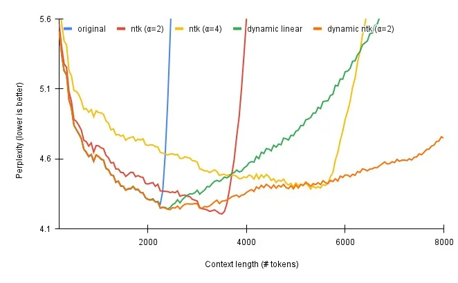
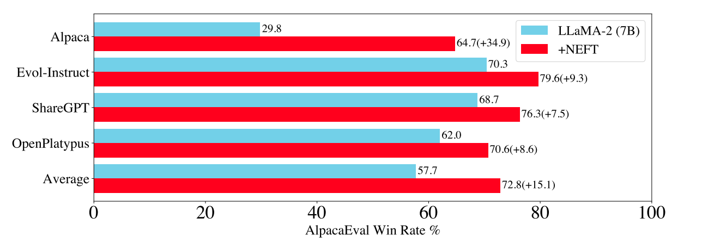

Large Language Models
Large Language Models (LLMs) are a kind of neural network used for text generation tasks like chatbots, coding assistants, etc. Unlike ECD models, which are primarily designed for predictive tasks, LLMs are a fundamentally generative model type.
The backbone of an LLM (without the language model head used for next token generation) can be used as a text encoder in ECD models when using the auto_transformer encoder. If you wish to use LLMs for predictive tasks like classification and regression, try ECD. For generative tasks, read on!
Example config for fine-tuning LLaMA-2-7b:
model_type: llm
base_model: meta-llama/Llama-2-7b-hf
input_features:
- name: input
type: text
output_features:
- name: response
type: text
prompt:
template: |
[INST] <<SYS>>
You are a helpful, detailed, and polite artificial
intelligence assistant. Your answers are clear and
suitable for a professional environment.
If context is provided, answer using only the provided
contextual information.
<</SYS>>
{user_message_1} [/INST]
adapter:
type: lora
quantization:
bits: 4
trainer:
type: finetune
learning_rate: 0.0001
batch_size: 1
gradient_accumulation_steps: 8
epochs: 3
Base Model¶
The base_model parameter specifies the pretrained large language model to serve
as the foundation of your custom LLM.
Currently, any pretrained HuggingFace Causal LM model from the HuggingFace Hub is supported as a base_model.
Example:
base_model: meta-llama/Llama-2-7b-hf
Attention
Some models on the HuggingFace Hub require executing untrusted code. For security reasons, these models are currently unsupported. If you have interest in using one of these models, please file a GitHub issue with your use case.
You can also pass in a path to a locally saved Hugging Face model instead of loading from Hugging Face directly.
Example:
base_model: path/to/local/model/weights
HuggingFace Access Token¶
Some base models like Llama-2 require authorization from HuggingFace to download, which in turn requires obtaining a HuggingFace User Access Token.
Once you have obtained permission to download your preferred base model and have a user access token, you only need to ensure that your token is exposes as an environment variable in order for Ludwig to be able to use it:
export HUGGING_FACE_HUB_TOKEN="<api_token>"
ludwig train ...
Features¶
Input Features¶
Currently, the LLM model type only supports a single input feature of type text.
If no prompt template is provided, this feature must correspond to a column
in the input dataset. If a prompt template is provided, the rendered prompt
will be used as the input feature value during training and inference.
input_features:
- name: input
type: text
See Text Features for configuration options.
Output Features¶
Currently, the LLM model type only supports a single output feature.
LLM Text Output Feature¶
When fine-tuning (trainer.type: finetune), the output feature type must be
text. Even if you are fine-tuning your LLM for a binary or multi-class classification
problem, set the output feature type of that column to text.
For in-context learning or zero shot learning (trainer.type: none), the output
feature type can be one of text or category.
output_features:
- name: response
type: text
See Text Output Features for configuration options.
LLM Category Output Feature¶
In order to use the category output feature type, you must provide two additional specifications. The first additional specification is a set of match values as part of the decoder configuration. These match values are used to determine which category label to assign to the generated response. This is particularly helpful to mitigate against cases where LLM text generation deviates from the desired response format.
The second additional specification is a fallback label in preprocessing.fallback_label. This label is used both for filling in missing values in the output feature column in your dataset, but also for providing a pre-determined value when the LLM is unable to generate a response that matches any of the categories provided.
output_features:
- name: label
type: category
preprocessing:
fallback_label: "neutral"
decoder:
type: category_extractor
match:
"negative":
type: contains
value: "negative"
"neutral":
type: contains
value: "neutral"
"positive":
type: contains
value: "positive"
Prompt¶
One of the unique properties of large language models as compared to more conventional deep learning models is their ability to incorporate context inserted into the “prompt†to generate more specific and accurate responses.
The prompt parameter can be used to:
- Provide necessary boilerplate needed to make the LLM respond in the correct way (for example, with a response to a question rather than a continuation of the input sequence).
- Combine multiple columns from a dataset into a single text input feature (see TabLLM).
- Provide additional context to the model that can help it understand the task, or provide restrictions to prevent hallucinations.
To make use of prompting, one of prompt.template or prompt.task must be provided. Otherwise the input feature value is passed into
the LLM as-is. Use template for fine-grained control over every aspect of the prompt, and use task to specify the nature of the
task the LLM is to perform while delegating the exact prompt template to Ludwig's defaults.
Attention
Some models that have already been instruction tuned will have been trained to expect a specific prompt template structure. Unfortunately, this isn't provided in any model metadata, and as such, you may need to dig around or experiment with different prompt templates to find what works best when performing in-context learning.
prompt:
template: null
task: null
retrieval:
type: null
index_name: null
model_name: null
k: 0
template(default:null) : The template to use for the prompt. Must contain at least one of the columns from the input dataset or__sample__as a variable surrounded in curly brackets {} to indicate where to insert the current feature. Multiple columns can be inserted, e.g.:The {color} {animal} jumped over the {size} {object}, where every term in curly brackets is a column in the dataset. If ataskis specified, then the template must also contain the__task__variable. Ifretrievalis specified, then the template must also contain the__context__variable. If no template is provided, then a default will be used based on the retrieval settings, and a task must be set in the config.task(default:null) : The task to use for the prompt. Required iftemplateis not set.retrieval(default:{"type": null}):
Retrieval¶
retrieval:
type: null
index_name: null
model_name: null
k: 0
type(default:null) : The type of retrieval to use for the prompt. IfNone, then no retrieval is used, and the task is framed as a zero-shot learning problem. If notNone(e.g. either 'random' or 'semantic'), then samples are retrieved from an index of the training set and used to augment the input to the model in a few-shot learning setting.index_name(default:null): The name of the index to use for the prompt. Indices are stored in the ludwig cache by default.model_name(default:null): The model used to generate the embeddings used to retrieve samples to inject in the prompt.k(default:0): The number of samples to retrieve.
Max Sequence Lengths¶
There are many factors at play when it comes to fine-tuning LLMs efficiently on a single GPU.
One of the most important parameters in your control to keep GPU memory usage in check is the choice of the maximum sequence length.
Ludwig provides 3 primary knobs to control max sequence lengths:
input_feature.preprocessing.max_sequence_lengthon the input example, which includes your prompt.output_feature.preprocessing.max_sequence_lengthon the output example, which does not include your prompt.preprocessing.global_max_sequence_length, which is the maximum length sequence (merged input and output) fed to the LLM's forward pass during training.

If you are running into GPU OOM issues, consider profiling your dataset to understand the distribution of sequence lengths. For input/output columns with a long tail distribution, it may be worth considering choosing a smaller max sequence length as to truncate a small portion of your data while still training with smaller GPUs.
Adapter¶
One of the biggest barriers to cost effective fine-tuning for LLMs is the need to update billions of parameters each training step. Parameter efficient fine-tuning (PEFT) adatpers are a collection of techniques that reduce the number of trainable parameters during fine-tuning to speed up training, and decrease the memory and disk space required to train large language models.
PEFT is a popular library from HuggingFace that implements a number of popular parameter efficient fine-tuning strategies. Ludwig provides native integration with PEFT, allowing you to leverage any number of techniques to more efficiently fine-tune LLMs through
the adapter config parameter.
LoRA¶
LoRA is a simple, yet effective, method for parameter-efficient fine-tuning of pretrained language models. It works by adding a small number of trainable parameters to the model, which are used to adapt the pretrained parameters to the downstream task. This allows the model to be fine-tuned with a much smaller number of training examples, and can even be used to fine-tune models on tasks that have no training data available at all.
adapter:
type: lora
r: 8
dropout: 0.05
target_modules: null
alpha: 16
pretrained_adapter_weights: null
postprocessor:
merge_adapter_into_base_model: false
progressbar: false
bias_type: none
r(default:8) : Lora attention dimension.dropout(default:0.05): The dropout probability for Lora layers.target_modules(default:null): List of module names or regex expression of the module names to replace with LoRA. For example, ['q', 'v'] or '.decoder.(SelfAttention|EncDecAttention).*(q|v)$'. Defaults to targeting the query and value matrices of all self-attention and encoder-decoder attention layers.alpha(default:null): The alpha parameter for Lora scaling. Defaults to2 * r.pretrained_adapter_weights(default:null): Path to pretrained weights.postprocessor:postprocessor.merge_adapter_into_base_model(default:false): Instructs whether or not the fine-tuned LoRA weights are to be merged into the base LLM model so that the complete fine-tuned model is available to be used and/or persisted, and then reused upon loading as a single model (rather than having to load base and fine-tuned models separately). Options:true,false.postprocessor.progressbar(default:false): Instructs whether or not to show a progress bar indicating the unload and merge process. Options:true,false.bias_type(default:none): Bias type for Lora. Options:none,all,lora_only.
AdaLoRA¶
AdaLoRA is an extension of LoRA that allows the model to adapt the pretrained parameters to the downstream task in a task-specific manner. This is done by adding a small number of trainable parameters to the model, which are used to adapt the pretrained parameters to the downstream task. This allows the model to be fine-tuned with a much smaller number of training examples, and can even be used to fine-tune models on tasks that have no training data available at all.
adapter:
type: adalora
r: 8
dropout: 0.05
target_modules: null
alpha: 16
pretrained_adapter_weights: null
postprocessor:
merge_adapter_into_base_model: false
progressbar: false
bias_type: none
target_r: 8
init_r: 12
tinit: 0
tfinal: 0
delta_t: 1
beta1: 0.85
beta2: 0.85
orth_reg_weight: 0.5
total_step: null
rank_pattern: null
r(default:8) : Lora attention dimension.dropout(default:0.05): The dropout probability for Lora layers.target_modules(default:null): List of module names or regex expression of the module names to replace with LoRA. For example, ['q', 'v'] or '.decoder.(SelfAttention|EncDecAttention).*(q|v)$'. Defaults to targeting the query and value matrices of all self-attention and encoder-decoder attention layers.alpha(default:null): The alpha parameter for Lora scaling. Defaults to2 * r.pretrained_adapter_weights(default:null): Path to pretrained weights.postprocessor:postprocessor.merge_adapter_into_base_model(default:false): Instructs whether or not the fine-tuned LoRA weights are to be merged into the base LLM model so that the complete fine-tuned model is available to be used and/or persisted, and then reused upon loading as a single model (rather than having to load base and fine-tuned models separately). Options:true,false.postprocessor.progressbar(default:false): Instructs whether or not to show a progress bar indicating the unload and merge process. Options:true,false.bias_type(default:none): Bias type for Lora. Options:none,all,lora_only.target_r(default:8): Target Lora Matrix Dimension. The target average rank of incremental matrix.init_r(default:12): Initial Lora Matrix Dimension. The initial rank for each incremental matrix.tinit(default:0): The steps of initial fine-tuning warmup.tfinal(default:0): The steps of final fine-tuning warmup.delta_t(default:1): The time internval between two budget allocations. The step interval of rank allocation.beta1(default:0.85): The hyperparameter of EMA for sensitivity smoothing.beta2(default:0.85): The hyperparameter of EMA for undertainty quantification.orth_reg_weight(default:0.5): The coefficient of orthogonality regularization.total_step(default:null): The total training steps that should be specified before training.rank_pattern(default:null): The allocated rank for each weight matrix by RankAllocator.
Adaption Prompt¶
Adaption Prompt is taken from the paper LLaMA-Adapter: Efficient Fine-tuning of Language Models with Zero-init Attention. It adds a set of learnable adaption prompts and prepends them to the word tokens at higher transformer layers. Then, a zero-initialized attention mechanism with zero gating is introduced, which adaptively injects new instructional cues into LLaMA, while effectively preserving its pre-trained knowledge. According to the paper, LLaMA-Adapter can generate high-quality responses, comparable to Alpaca with fully fine-tuned 7B parameters.
adapter:
type: adaption_prompt
adapter_len: 4
adapter_layers: 1
pretrained_adapter_weights: null
postprocessor:
merge_adapter_into_base_model: false
progressbar: false
adapter_len(default:4) : Number of adapter tokens to insert.adapter_layers(default:1) : Number of adapter layers to insert (from the top).pretrained_adapter_weights(default:null): Path to pretrained weights.postprocessor:postprocessor.merge_adapter_into_base_model(default:false): Instructs whether or not the fine-tuned LoRA weights are to be merged into the base LLM model so that the complete fine-tuned model is available to be used and/or persisted, and then reused upon loading as a single model (rather than having to load base and fine-tuned models separately). Options:true,false.postprocessor.progressbar(default:false): Instructs whether or not to show a progress bar indicating the unload and merge process. Options:true,false.
IA3¶
Infused Adapter by Inhibiting and Amplifying Inner Activations, or IA3,
is a method that adds three learned vectors l_k``,l_v`, andl_ff`, to rescale the keys and values of the self-attention and encoder-decoder attention layers, and the intermediate activation of the position-wise feed-forward network respectively. These learned vectors are the only trainable parameters during fine-tuning, and thus the original weights remain frozen. Dealing with learned vectors (as opposed to learned low-rank updates to a weight matrix like LoRA) keeps the number of trainable parameters much smaller.
adapter:
type: ia3
target_modules: null
feedforward_modules: null
fan_in_fan_out: false
modules_to_save: null
init_ia3_weights: true
pretrained_adapter_weights: null
postprocessor:
merge_adapter_into_base_model: false
progressbar: false
target_modules(default:null) : The names of the modules to apply (IA)^3 to.feedforward_modules(default:null) : The names of the modules to be treated as feedforward modules, as in the original paper. These modules will have (IA)^3 vectors multiplied to the input, instead of the output. feedforward_modules must be a name or a subset of names present in target_modules.fan_in_fan_out(default:false) : Set this to True if the layer to replace stores weight like (fan_in, fan_out). For example, gpt-2 uses Conv1D which stores weights like (fan_in, fan_out) and hence this should be set to True. Options:true,false.modules_to_save(default:null) : List of modules apart from (IA)^3 layers to be set as trainable and saved in the final checkpoint.init_ia3_weights(default:true) : Whether to initialize the vectors in the (IA)^3 layers, defaults to True. Options:true,false.pretrained_adapter_weights(default:null): Path to pretrained weights.postprocessor:postprocessor.merge_adapter_into_base_model(default:false): Instructs whether or not the fine-tuned LoRA weights are to be merged into the base LLM model so that the complete fine-tuned model is available to be used and/or persisted, and then reused upon loading as a single model (rather than having to load base and fine-tuned models separately). Options:true,false.postprocessor.progressbar(default:false): Instructs whether or not to show a progress bar indicating the unload and merge process. Options:true,false.
Quantization¶
Quantization allows you to load model parameters, which are typically stored as 16 or 32 bit floating-points, as 4 bit or 8 bit integers. This allows you to reduce the GPU memory overhead by a factor of up to 8x.
When combined with the LoRA adapter, you can perform quantized fine-tuning as described in the paper QLoRA. For context, this enables training large language models as big as 7 billion parameters on a single commodity GPU with minimal performance penalties.
Attention
Quantized fine-tuning currently requires using adapter: lora. In-context
learning does not have this restriction.
Attention
Quantization is currently only supported with backend: local.
quantization:
bits: 4
llm_int8_threshold: 6.0
llm_int8_has_fp16_weight: false
bnb_4bit_compute_dtype: float16
bnb_4bit_use_double_quant: true
bnb_4bit_quant_type: nf4
bits(default:4) : The quantization level to apply to weights on load. Options:4,8.llm_int8_threshold(default:6.0): This corresponds to the outlier threshold for outlier detection as described inLLM.int8() : 8-bit Matrix Multiplication for Transformers at Scalepaper: https://arxiv.org/abs/2208.07339. Any hidden states value that is above this threshold will be considered an outlier and the operation on those values will be done in fp16. Values are usually normally distributed, that is, most values are in the range [-3.5, 3.5], but there are some exceptional systematic outliers that are very differently distributed for large models. These outliers are often in the interval [-60, -6] or [6, 60]. Int8 quantization works well for values of magnitude ~5, but beyond that, there is a significant performance penalty. A good default threshold is 6, but a lower threshold might be needed for more unstable models (small models, fine-tuning).llm_int8_has_fp16_weight(default:false): This flag runs LLM.int8() with 16-bit main weights. This is useful for fine-tuning as the weights do not have to be converted back and forth for the backward pass. Options:true,false.bnb_4bit_compute_dtype(default:float16): This sets the computational type which might be different than the input type. For example, inputs might be fp32, but computation can be set to bf16 for speedups. Options:float32,float16,bfloat16.bnb_4bit_use_double_quant(default:true): This flag is used for nested quantization where the quantization constants from the first quantization are quantized again. Options:true,false.bnb_4bit_quant_type(default:nf4): This sets the quantization data type in the bnb.nn.Linear4Bit layers. Options:fp4,nf4.
Model Parameters¶
The model parameters section is used to customized LLM model parameters during model initialization.
Currently, the only supported initialization parameter is rope_scaling.
# Defaults
model_parameters:
rope_scaling: {}
neftune_noise_alpha: 0
RoPE Scaling¶
Large language models like LLaMA-2 face a limitation in the length of context they can consider, which impacts their capacity to comprehend intricate queries or chat-style discussions spanning multiple paragraphs. For instance, LlaMA-2's context is capped at 4096 tokens, or roughly 3000 English words. This renders the model ineffective for tasks involving lengthy documents that surpass this context length.
RoPE Scaling presents a way to increase the context length of your model at the cost of a slight performance penalty using a method called Position Interpolation. You can read more about it in the original paper here.
There are two parameters to consider for RoPE scaling: type and factor. The typical rule of thumb is that
your new context length will be context_length * factor. So, if you want to extend LLaMA-2 to have a context
length of ~ 16K tokens, you would set the factor to 4.0. The type attribute supports linear interpolation
and dynamic interpolation. Typically, dynamic interpolation has the best performance over larger context lengths
while maintaining low perplexity.
 Credit to /u/emozilla and /u/kaiokendev on Reddit for their work and this graphic.
You can enable RoPE Scaling in Ludwig using the following config:
rope_scaling:
type: dynamic
factor: 2.0
type(default:null): Currently supports two strategies: linear and dynamic scaling. Options:linear,dynamic,null.factor(default:null): The scaling factor for RoPE embeddings.
Attention
Typically, you need to fine-tune your LLM for about 1000 steps with RoPE scaling enabled to ensure that the performance drop with RoPE scaling is minimal and the model adapts your data to the new RoPE embeddings.
Neftune Noise Alpha¶
NEFTune is a technique to boost the performance of models during fine-tuning. NEFTune adds noise to the embedding vectors during training. The alpha parameter serves as a control mechanism, allowing users to regulate the intensity of noise introduced to embeddings. A higher alpha value corresponds to a greater amount of noise, impacting the embedding vectors during the fine-tuning phase.
Standard finetuning of LLaMA-2-7B using Alpaca achieves 29.79% on AlpacaEval, which rises to 64.69% using noisy embeddings. NEFTune also improves over strong baselines on modern instruction datasets. You can find more information in the paper titled "NEFTune: Noisy Embeddings Improve Instruction Finetuning".

You can enable NEFTune in Ludwig using the following config:
model_parameters:
neftune_noise_alpha: 5
Trainer¶
LLMs support multiple different training objectives:
- Fine-Tuning (
type: finetune): update the weights of a pretrained LLM with supervised learning. - In-Context Learning (
type: none): evaluate model performance and predict using only context provided in the prompt.
Fine-Tuning¶
For fine-tuning, see the Trainer section for configuration options.
trainer:
type: finetune
In-Context Learning¶
For in-context learning, the none trainer is specified to denote that no
model parameters will be updated and the "training" step will essentially be
a no-op, except for the purpose of computing metrics on the test set.
trainer:
type: none
Generation¶
When generating text during inference using a pretrained or fine-tuned LLM, you may
often want to control the generation process, such as what token decoding strategy to use,
how many new tokens to produce, which tokens to exclude, or how diverse you want the generated
text to be. All of these can be controlled through the generation config in Ludwig.
While Ludwig sets predefined default values for most of these parameters, some of the most useful parameters to control the generation process are:
max_new_tokenstemperaturedo_samplenum_beamstop_ktop_p
Check out the description for these parameters below!
generation:
max_new_tokens: 32
temperature: 0.1
min_new_tokens: null
max_length: 32
min_length: 0
do_sample: true
num_beams: 1
use_cache: true
top_k: 50
top_p: 1.0
early_stopping: false
max_time: null
num_beam_groups: 1
penalty_alpha: null
typical_p: 1.0
epsilon_cutoff: 0.0
eta_cutoff: 0.0
diversity_penalty: 0.0
repetition_penalty: 1.0
encoder_repetition_penalty: 1.0
length_penalty: 1.0
no_repeat_ngram_size: 0
bad_words_ids: null
force_words_ids: null
renormalize_logits: false
forced_bos_token_id: null
forced_eos_token_id: null
remove_invalid_values: false
exponential_decay_length_penalty: null
suppress_tokens: null
begin_suppress_tokens: null
forced_decoder_ids: null
sequence_bias: null
guidance_scale: null
pad_token_id: null
bos_token_id: null
eos_token_id: null
max_new_tokens(default:32) : The maximum number of new tokens to generate, ignoring the number of tokens in the input prompt. If not set, this is dynamically determined by Ludwig based on either themax_sequence_lengthof the ouput feature, the global_max_sequence_length specified in preprocessing (if specified), or the maximum context length supported by the model (in the order specified).temperature(default:0.1) : Temperature is used to control the randomness of predictions. A high temperature value (closer to 1) makes the output more diverse and random, while a lower temperature (closer to 0) makes the model's responses more deterministic and focused on the most likely outcome. In other words, temperature adjusts the probability distribution from which the model picks the next token.min_new_tokens(default:null): The minimum number of new tokens to generate, ignoring the number of tokens in the input prompt.max_length(default:32): The maximum length the generated tokens can have. Corresponds to the length of the input prompt + max_new_tokens. Its effect is overridden by max_new_tokens, if also set.min_length(default:0): The minimum length of the sequence to be generated. Corresponds to the length of the input prompt + min_new_tokens. Its effect is overridden by min_new_tokens, if also set.do_sample(default:true): Whether or not to use sampling ; use greedy decoding otherwise. Options:true,false.num_beams(default:1): Number of beams for beam search. 1 means no beam search and is the default value. The beam search strategy generates the translation word by word from left-to-right while keeping a fixed number (beam) of active candidates at each time step during token generation. By increasing the beam size, the translation performance can increase at the expense of significantly reducing the decoder speed.use_cache(default:true): Whether or not the model should use the past last key/values attentions (if applicable to the model) to speed up decoding. Options:true,false.top_k(default:50): The number of highest probability vocabulary tokens to keep for top-k-filtering.top_p(default:1.0): If set to float < 1, only the most probable tokens with probabilities that add up to top_p or higher are kept for generation.early_stopping(default:false): Controls the stopping condition for beam-based methods, like beam-search. It accepts the following values: True, where the generation stops as soon as there are num_beams complete candidates; False, where an heuristic is applied and the generation stops when is it very unlikely to find better candidates;never, where the beam search procedure only stops when there cannot be better candidates (canonical beam search algorithm) Options:true,false.max_time(default:null): The maximum amount of time you allow the computation to run for in seconds. generation will still finish the current pass after allocated time has been passed.num_beam_groups(default:1): Number of groups to divide num_beams into in order to ensure diversity among different groups of beams. 1 means no group beam search.penalty_alpha(default:null): The values balance the model confidence and the degeneration penalty in contrastive search decoding.typical_p(default:1.0): Local typicality measures how similar the conditional probability of predicting a target token next is to the expected conditional probability of predicting a random token next, given the partial text already generated. If set to float < 1, the smallest set of the most locally typical tokens with probabilities that add up to typical_p or higher are kept for generation.epsilon_cutoff(default:0.0): If set to float strictly between 0 and 1, only tokens with a conditional probability greater than epsilon_cutoff will be sampled. In the paper, suggested values range from 3e-4 to 9e-4, depending on the size of the model.eta_cutoff(default:0.0): Eta sampling is a hybrid of locally typical sampling and epsilon sampling. If set to float strictly between 0 and 1, a token is only considered if it is greater than either eta_cutoff or sqrt(eta_cutoff) * exp(-entropy(softmax(next_token_logits))). The latter term is intuitively the expected next token probability, scaled by sqrt(eta_cutoff). In the paper, suggested values range from 3e-4 to 2e-3, depending on the size of the model.diversity_penalty(default:0.0): The value used to control the diversity of the generated text. The higher the value, the more diverse the text will be. If set to 0, no diversity is enforced.This value is subtracted from a beam(s) score if it generates a token same as any beam from other group at aparticular time. Note that diversity_penalty is only effective if group beam search is enabled.repetition_penalty(default:1.0): The parameter for repetition penalty. 1.0 means no penalty. See this paper for more details.encoder_repetition_penalty(default:1.0): The paramater for encoder_repetition_penalty. An exponential penalty on sequences that are not in the original input. 1.0 means no penalty.length_penalty(default:1.0): Exponential penalty to the length that is used with beam-based generation. It is applied as an exponent to the sequence length, which in turn is used to divide the score of the sequence. Since the score is the log likelihood of the sequence (i.e. negative), length_penalty > 0.0 promotes longer sequences, while length_penalty < 0.0 encourages shorter sequences.no_repeat_ngram_size(default:0): If set to int > 0, all ngrams of that size can only occur once.bad_words_ids(default:null): List of token ids that are not allowed to be generated. In order to get the tokens of the words that should not appear in the generated text, use tokenizer(bad_word, add_prefix_space=True).input_ids.force_words_ids(default:null): List of token ids that are forced to be generated by the model. In order to get the tokens of the words that should appear in the generated text, use tokenizer(force_word, add_prefix_space=True).input_ids.renormalize_logits(default:false): Whether to renormalize the logits after temperature and top_k/top_p filtering. Options:true,false.forced_bos_token_id(default:null): The id of the token to force as the first generated token after the decoder_start_token_id.Useful for multilingual models like mBART where the first generated token needs to be the target languagetoken.forced_eos_token_id(default:null): The id of the token to force as the last generated token when max_length is reached. Optionally, use a list to set multiple end-of-sequence tokens.remove_invalid_values(default:false): Whether to remove possible nan and inf outputs of the model to prevent the generation method to crash. Note that using remove_invalid_values can slow down generation. Options:true,false.exponential_decay_length_penalty(default:null): This Tuple adds an exponentially increasing length penalty, after a certain amount of tokens have been generated. The tuple shall consist of: (start_index, decay_factor) where start_index indicates where penalty starts and decay_factor represents the factor of exponential decaysuppress_tokens(default:null): A list of tokens that will be suppressed at generation. The SupressTokens logit processor will set their log probs to -inf so that they are not sampled.begin_suppress_tokens(default:null): A list of tokens that will be suppressed at the beginning of the generation. The SupressBeginTokens logit processor will set their log probs to -inf so that they are not sampled.forced_decoder_ids(default:null): A list of forced decoder ids. The ForcedDecoderIds logit processor will set the log probs of all tokens that are not in the list to -inf so that they are not sampled.sequence_bias(default:null): A dictionary of token ids to bias the generation towards. The SequenceBias logit processor will add the bias to the log probs of the tokens in the dictionary. Positive biases increase the odds of the sequence being selected, while negative biases do the opposite.guidance_scale(default:null): The guidance scale for classifier free guidance (CFG). CFG is enabled by setting guidance_scale > 1. Higher guidance scale encourages the model to generate samples that are more closely linked to the input prompt, usually at the expense of poorer quality.pad_token_id(default:null): The id of the padding token. If not set, the padding token id of the tokenizer is used.bos_token_id(default:null): The id of the beginning of sentence token. If not set, the bos token id of the tokenizer is used.eos_token_id(default:null): The id of the end of sentence token. If not set, the eos token id of the tokenizer is used.
Generation Strategies¶
Text generation can be performed in a variety of ways for inference. Broadly, there are 5 strategies:
- Greedy Decoding (default): Greedy search is the simplest decoding method. It selects the word with the highest probability as its next word at each time step
t. - Beam Search: Beam search reduces the risk of missing hidden high probability word sequences by keeping the most likely
num_beamsof hypotheses at each time steptand eventually choosing the hypothesis that has the overall highest probability. - Sampling: Sampling means randomly picking the next word according to its conditional probability distribution. Language generation using sampling is not deterministic.
- Top-k Sampling: In Top-k sampling, the
kmost likely next words are filtered and the probability mass is redistributed among only thoseknext words. - Top-p (nucleus) sampling: Instead of sampling only from the most likely K words, Top-p sampling chooses from the smallest possible set of words whose cumulative probability exceeds the probability
p. The probability mass is then redistributed among this set of words. This way, the size of the set of words (a.k.a the number of words in the set) can dynamically increase and decrease according to the next word's probability distribution.
If you want to enable a decoding strategy other than greedy decoding, you can set the following parameters in the generation config to enable them.
- Greedy Decoding (default):
generation:
num_beams: 1
do_sample: false
- Multinomial Sampling:
generation:
num_beams: 1
do_sample: true
- Beam-Search Decoding:
generation:
num_beams: 2 # Must be > 1
do_sample: false
- Contrastive Search:
generation:
penalty_alpha: 0.1 # Must be > 0
top_k: 2 # Must be > 1
- Beam-Search Multinomial Sampling:
generation:
num_beams: 2 # Must be > 1
do_sample: true
- Diverse Beam-Search Decoding:
generation:
num_beams: 2 # Must be > 1
num_beam_groups: 2 # Must be > 1
To read more about how these decoding strategies work in a visual manner, check out this excellent blogpost by HuggingFace.
Post Fine-Tuning¶
Uploading Fine-Tuned LLM weights to HuggingFace Hub¶
Once you've fine-tuned your model, you can upload your fine-tuned model artifacts straight to HuggingFace Hub, either in a public model repository that anyone can access, or to a private repository. This works for both artifacts produced during full fine-tuning, as well as adapter based fine-tuning. From there, you can pull the weights straight into a downstream inference service, or even use it directly through Ludwig for inference.
ludwig upload hf_hub --repo_id <repo_id> --model_path </path/to/saved/model>
To learn more on how to do this, click here.